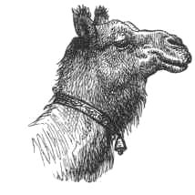
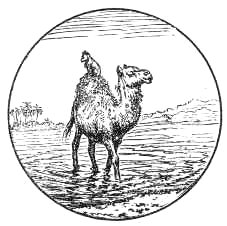

THERE once lived a Camel and a Jackal who were great friends. One day the Jackal said to the Camel, 'I know that there is a fine field of sugar-cane on the other side of the river. If you will take me across I'll show you the place. This plan will suit me as well as you. You will enjoy eating the sugar-cane, and I am sure to find many crabs, bones, and bits of fish by the river-side, on which to make a good dinner.'
The Camel consented, and swam across the river, taking the Jackal, who could not swim, on his back. When they reached the other side, the Camel went to eat the sugar-cane, and the Jackal ran up and down the river-bank devouring all the crabs, bits of fish, and bones he could find.
But being so much smaller an animal, he bad made an excellent meal before the Camel had eaten more than two or three mouthfuls; and no sooner had he finished his dinner, than he ran round and round the sugar-cane field, yelping and howling with all his might
The villagers heard him, and thought, 'There is a Jackal among the sugar-canes; he will be scratching holes in the ground, and spoiling the roots of the plants.' And they went down to the place to drive him away. But when they got there, they found to their surprise not only a Jackal, but a Camel who was eating the sugar-canes! This made them very angry, and they caught the poor Camel, and drove him from the field, and beat him until he was nearly dead.
When they had gone, the Jackal said to the Camel, 'We had better go home.' And the Camel said, 'Very well, then, jump upon my back as you did before.'
So the Jackal jumped upon the Camel's back, and the Camel began to recross the river. When they had got well into the water, the Camel said, 'This is a pretty way in which you have treated me, friend Jackal. No sooner had you finished your own dinner than you must go yelping about the place loud enough to arouse the whole village, and bring all the villagers down to beat me black and blue, and turn me out of the field before I had eaten two mouthfuls! What in the world did you make such a noise for?'
'I don't know,' said the Jackal 'It is a custom I have. I always like to sing a little after dinner.'
The Camel waded on through the river. The water reached up to his knees--then above them--up, up, up, higher and higher, until he was obliged to swim. Then turning to the Jackal, he said, 'I feel very anxious to roll.' 'Oh, pray don't; why do you wish to do so? asked the Jackal. 'I don't know,' answered the Camel: 'it is a custom I have. I always like to have a little roll after dinner.' So saying, he rolled over in the water, shaking the Jackal off as he did so. And the Jackal was drowned, but the Camel swam safely ashore.
